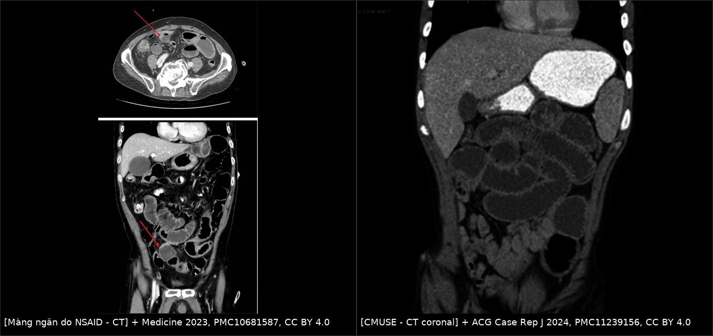
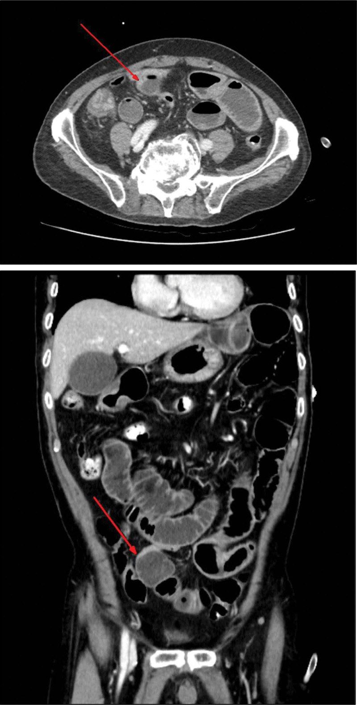
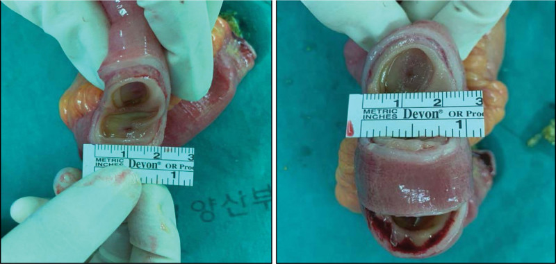
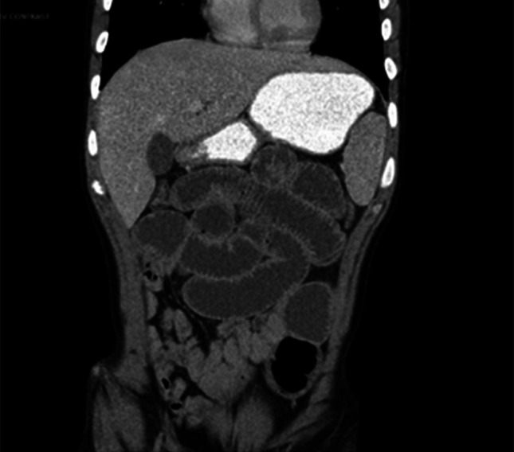
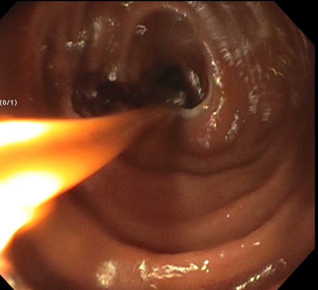
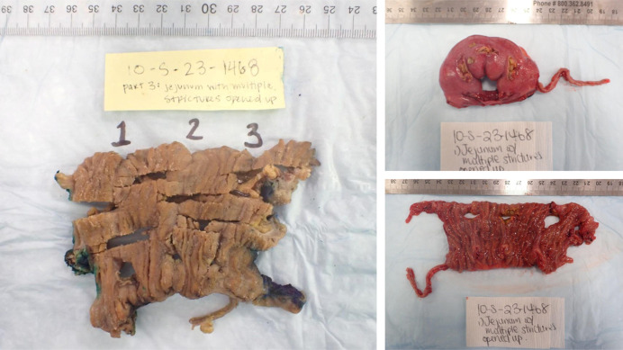

1984 — Bệnh màng ngăn ruột non do NSAID (diaphragm disease) & viêm ruột loét–hẹp nhiều ổ (CMUSE): nhiều hẹp NGẮN, khi nào nong – khâu tạo hình – cắt đoạn
Tags: pattern:hep-ngan pattern:nhieu-o-hep pattern:tac-ruot pattern:day-thanh-ruot vung:ruot-non vung:hoi-trang vung:tieu-hoa protocol:CT-bung-can-quang protocol:MR-enterography protocol:noi-soi-vien-capsule protocol:noi-soi-hai-bong
Mức chắc chắn (certainty): tổng hợp y văn (literature synthesis) — ghép 1 ca nguyên văn có ảnh CT + đại thể (Medicine 2023, PMC10681587, CC BY 4.0), 1 tổng quan 144 ca màng ngăn toàn ống tiêu hóa (Gastroenterol Res Pract 2016, PMC4826940, CC BY), 1 loạt 3 ca + tổng quan (Ann Surg Treat Res 2018, PMC5931940, CC BY-NC), 2 ca CMUSE (ACG Case Rep J 2024, PMC11239156, CC BY; Am J Case Rep 2024, PMC11332959, CC BY-NC-ND). Số nào nguồn không đưa thì ghi "chưa rõ".
Bài này trả lời 4 câu hỏi của ca "tắc ruột non tái diễn, không có sẹo mổ": (1) Đây là dính, Crohn, lao, hẹp do thiếu máu hay màng ngăn do thuốc? (2) Vì sao CT chỉ thấy "thắt đột ngột" mà không thấy khối? (3) Nội soi viên nang có an toàn không? (4) Nong bóng, khâu tạo hình hay cắt đoạn — và ngừng thuốc có đủ? Đây là nhóm nhiều ổ hẹp ngắn đối chiếu với 1847 – Hẹp ruột do thiếu máu sau nút mạch (một ổ, dài) và 162 – Tắc ruột non/già (bàn về cơ chế tắc chung).
1. Tổng quan bệnh học – cơ chế hình ảnh
1.1 Màng ngăn hình thành thế nào (chuỗi 3 bước)
- Bước 1 — độc tế bào: NSAID ức chế cyclooxygenase (giảm prostaglandin bảo vệ niêm mạc) và ức chế phosphoryl hóa oxy hóa ở ty thể tế bào ruột (uncoupling) → giảm ATP.
- Bước 2 — mất hàng rào: thiếu ATP làm rối loạn các liên kết chặt (tight junction) → tăng tính thấm niêm mạc; acid mật, enzym tụy và vi khuẩn tràn vào lớp dưới niêm.
- Bước 3 — viêm rồi xơ: hóa ứng động bạch cầu trung tính → loét nông hình vành khăn; mô hạt dưới niêm mạc trưởng thành thành sẹo collagen, co lại như "dây rút" (drawstring) quanh lòng ruột → màng ngăn mỏng, đường kính lỗ còn 1–4 mm ("pinhole").
- Điểm mấu chốt về giải phẫu bệnh: tổn thương chỉ ở niêm mạc và dưới niêm mạc, thanh mạc nguyên vẹn → mặt ngoài ruột bình thường. Đây là lý do nội soi ổ bụng dễ bỏ sót, phải sờ toàn bộ ruột hoặc nội soi trong mổ (Ann Surg Treat Res 2018, PMC5931940).
1.2 Vì sao hình ảnh "nghèo" hơn bệnh lý
- Màng dày 2–4 mm, không tạo khối, không thâm nhiễm mỡ, không hạch → trên CT chỉ thấy giãn quai ruột phía trên + chỗ thắt đột ngột (transition); muốn thấy chính màng phải cắt ≤ 1–1,5 mm và tái tạo đúng mặt phẳng vuông góc với trục ruột.
- Hồi cứu CT ở bệnh nhân màng ngăn: 92% có hẹp, chiều dài hẹp 5 mm – 10 cm (trung vị 1 cm, trung bình 2,8 cm) (Medicine 2023, PMC10681587, dẫn dữ liệu tổng quan).
- Tại sao thành ruột dày: phì đại cơ niêm (muscularis mucosae) và xơ dưới niêm, không phải viêm xuyên thành — nên độ dày thành thường < 5 mm, khác Crohn.
- Tại sao tắc từng đợt: lỗ hẹp cố định nhưng khẩu kính thay đổi theo nhu động và mảnh thức ăn; giữa các cơn, quai ruột xẹp lại nên phim chụp lúc "êm" có thể bình thường.
1.3 Số liệu dịch tễ và ngưỡng định lượng
- 2% người dùng NSAID cổ điển dài hạn phát triển màng ngăn ruột non; 50–70% người dùng NSAID dài hạn có một dạng enteropathy (loét/erosion) (Gastroenterol Res Pract 2016, PMC4826940; Ann Surg Treat Res 2018, PMC5931940).
- Tuổi trung bình 65 ± 11; nữ:nam ≈ 3:1 (loạt tổng quan: 2,3:1); 96% dùng NSAID > 1 năm (khoảng 2 tháng – 25 năm).
- Số tổn thương: 3–70 màng trên một bệnh nhân; màng dày 2–4 mm (Medicine 2023, PMC10681587).
- Vị trí: 59,7% ở ruột non, 30,2% ở đại tràng; trong ruột non 57,9% ở hồi tràng; hồi tràng tận thường được bảo tồn (chỉ 5 ca) (PMC4826940).
- Yếu tố nguy cơ di truyền: đa hình CYP2C9*3 (giảm phân hủy NSAID) liên quan tăng nguy cơ (PMC4826940; PMC5931940).
- Dạng thuốc: thuốc phóng thích chậm/bao tan ở ruột (đặc biệt diclofenac SR) hay gây tổn thương đại tràng phải vì thuốc đi tới đại tràng mới tan hết; 26,4% (38/144) ca trong tổng quan vẫn dùng ức chế COX-2 chọn lọc — "chọn lọc" không miễn nhiễm.
1.4 CMUSE — người anh em "không do thuốc" của cùng mẫu hình
- CMUSE/CNSU (cryptogenic multifocal ulcerating stenosing enteropathy / chronic nonspecific multiple ulcers of the small intestine): ~200 ca đã báo cáo toàn cầu; không dùng NSAID; nhiều hẹp ngắn + loét nông; thiếu máu, phù, hạ albumin do mất đạm; ngón tay dùi trống.
- CT của CMUSE: nhiều hẹp ngắn < 2 cm, hẹp hình vành khăn, thành dày nhẹ, giãn ruột phía trên, không thủng, không rò (Am J Case Rep 2024, PMC11332959, dẫn Ramos và cs).
- Cơ chế di truyền: mất chức năng SLCO2A1 (vận chuyển prostaglandin) hoặc PLA2G4A → prostaglandin ứ lại tại niêm mạc → loét và xơ hẹp; thể SLCO2A1 hay kèm dùi trống và bệnh khớp tăng sinh (ACG Case Rep J 2024, PMC11239156).
2. Mẫu hình + chẩn đoán phân biệt theo vị trí (gamut)
- Trục 1 — số ổ và chiều dài hẹp (quyết định nhất):
- Nhiều ổ, mỗi ổ RẤT NGẮN (1–5 mm) như màng → màng ngăn do NSAID, CMUSE.
- Một ổ, đoạn hẹp DÀI (vài cm) → hẹp sau thiếu máu (bài 1847), hẹp do xạ, lao, u.
- Nhiều ổ nhưng dài/không đều, có loét dọc, hạch → Crohn.
- Trục 2 — vị trí: hồi tràng giữa–xa (NSAID, CMUSE); hồi tràng tận + manh tràng (lao, Crohn); đại tràng phải (NSAID phóng thích chậm); dạ dày/tá tràng (ít gặp, thường kèm tổn thương ruột non).
- Trục 3 — bối cảnh: đau lưng/khớp dùng naproxen, diclofenac, piroxicam ≥ 1 năm → nghĩ màng ngăn; trẻ/người trẻ không dùng thuốc, dùi trống, CRP bình thường → CMUSE; tiền sử nút mạch mạc treo → hẹp thiếu máu.
- Trục 4 — biến chứng: hẹp đơn thuần (hẹp + giãn) / kẹt viên nang / tắc hoàn toàn / xuất huyết ẩn – thiếu sắt / hiếm: thủng, lồng ruột.
- Gợi nhớ SHORT: Strictures Hẹp ngắn Only small bowel Recurrent (tái diễn) Thinking of drugs (nghĩ tới thuốc) — nếu một ổ dài thì nghĩ nhóm thiếu máu/xạ/lao/u.
3. Bảng so sánh phân biệt (ma trận đối chiếu)
| Thực thể (entity) | Hình ảnh điển hình | Chốt vào (rule-in) | Chốt loại (rule-out) | Gợi ý xác nhận |
|---|---|---|---|---|
| Màng ngăn do NSAID (diaphragm disease) | Nhiều màng mỏng 2–4 mm, lỗ 1–4 mm, hẹp ngắn, giãn quai trên, thành dày nhẹ < 5 mm | Nhiều hẹp rất ngắn + tiền sử NSAID ≥ 1 năm + không sẹo mổ | Một ổ hẹp dài, thâm nhiễm mỡ, hạch → không phải màng ngăn | Hỏi kỹ thuốc giảm đau (kể cả thuốc mua tự do); DBE thấy màng; mô học xơ dưới niêm |
| CMUSE/CNSU | Nhiều hẹp ngắn < 2 cm, loét nông, giãn trên, không rò/thủng | Nhiều hẹp ngắn + loét nông + KHÔNG dùng NSAID + CRP bình thường | Loét dọc, sùi, hạch, thâm nhiễm xuyên thành → Crohn/u | Gen SLCO2A1/PLA2G4A; dùi trống; theo dõi tái phát sau mổ |
| Crohn ruột non | Loét dọc, cobblestone, hẹp dài/không đều, thâm nhiễm mỡ (creeping fat), hạch, rò | Loét dọc + thâm nhiễm mỡ + hạch + tăng CRP | Nhiều màng ngắn đều, không hạch, không rò → màng ngăn/CMUSE | Nội soi + mô học u hạt; MRI theo dõi |
| Lao ruột | Loét hình vành khăn ở hồi tràng tận/manh tràng, hạch hoại tử, dày thành | Hạch hoại tử + tổn thương hồi manh tràng + bằng chứng lao | Hẹp rải rác nhiều đoạn không hạch → không điển hình lao | PCR/cấy lao, X-quang phổi, T-SPOT |
| Hẹp sau thiếu máu (bài 1847) | Một ổ hẹp dài, thành mỏng–xơ, không loét, tiền sử nút mạch/tắc mạch mạc treo | Một ổ + bối cảnh thiếu máu mạc treo | Nhiều ổ ngắn → nghĩ màng ngăn/CMUSE | So phim cũ; CT thấy mạch mạc treo |
| Hẹp do xạ | Đoạn hẹp dài trong trường chiếu xạ, thành dày, mất lớp mỡ, không loét nông | Vị trí trùng trường xạ + tiền sử xạ | Nhiều ổ ngoài trường xạ → không do xạ | Đối chiếu kế hoạch xạ; MRI |
| Dính/sẹo mổ | Một điểm gấp khúc, không có màng, không dày thành; quai ruột dính thành bụng | Sẹo mổ + một điểm tắc | Nhiều ổ ngắn rải rác → không phải dính đơn thuần | Mổ/phẫu thuật nội soi; sờ ruột |
| U ruột non | Khối đặc ngấm thuốc, lồng ruột, hạch, di căn | Khối đặc + hạch + di căn | Chỉ màng mỏng không khối → không phải u | CT/MRI bụng, nội soi + sinh thiết |

Trái: CT bụng — giãn quai ruột non với chỗ thắt đột ngột ở hồi tràng xa, không thấy khối (màng ngăn do NSAID). Phải: CT coronal — tắc ruột non không viêm, nhiều quai giãn, không thâm nhiễm mỡ (CMUSE). Nguồn: Medicine 2023 (PMC10681587, CC BY 4.0) và ACG Case Rep J 2024 (PMC11239156, CC BY 4.0). Ảnh ghép letterbox.4. Protocol chụp + chiến lược xử trí
4.1 Protocol hình ảnh
- CT enterography (ưu tiên): uống 1,5–2 L dung dịch cản quang trung tính (mannitol/PEG) chia đều 45–60 phút; cắt 1–1,5 mm, tái tạo MPR trục ngang + coronal + mặt phẳng vuông góc với trục ruột; đọc theo trình tự: số ổ → chiều dài → đường kính lỗ → mức giãn trước hẹp (> 3 cm) → thành/dấu viêm.
- MR enterography: khi cần tránh bức xạ (trẻ, theo dõi lặp ở CMUSE); T2 + DWI + T1 sau tiêm; không dùng để đo lỗ màng chính xác.
- Nội soi viên nang (capsule endoscopy): chẩn đoán tốt nhưng nguy cơ kẹt cao — trong loạt 36 ca có 31 ca (86%) phải lấy viên nang bằng mổ mở và 4 ca bằng DBE (PMC4826940); ưu tiên DBE khi đã biết có hẹp hoặc nghi tắc.
- Nội soi hai bóng (DBE) / nội soi trong mổ: vừa xác định số ổ và chiều dài, vừa nong bóng hoặc khâu tạo hình; cần khảo sát toàn bộ ruột vì tổn thương có thể ở nhiều đoạn.
4.2 Chiến lược xử trí (ngưỡng thực hành)
- Bước 1 — ngừng NSAID (và thay bằng thuốc khác): tổn thương sớm/loét có thể hồi phục; màng xơ đã hình thành thì không mất đi, nhưng ngừng thuốc ngăn tổn thương mới và cải thiện tiên lượng (PMC5931940).
- Bước 2 — nong bóng qua nội soi: hợp với ít ổ, hẹp ngắn, không loét hoạt động; nguy cơ thủng thấp vì mô xơ (PMC5931940); có thể lặp lại.
- Bước 3 — khâu tạo hình dọc (stricturoplasty): khi nhiều ổ rải rác không thể cắt hết, hoặc muốn giữ chiều dài ruột.
- Bước 4 — cắt đoạn: khi nhiều ổ tập trung một đoạn (như ca 20 cm có 3–5 màng), hoặc hẹp không nong được, hoặc có biến chứng (thủng, lồng ruột).
- CMUSE: lui bệnh bằng corticoid (có thể đảo ngược hẹp sớm), kháng TNF trong ca khó; hẹp xơ cố định → nong/mổ; theo dõi CRP, calprotectin, CT/MRI + capsule luân phiên.
flowchart TD
A[Tắc ruột non tái diễn, không sẹo mổ] --> B{Có dùng NSAID ≥ 1 năm?}
B -->|Có| C[Nghĩ màng ngăn do NSAID]
B -->|Không| D{Trẻ, dùi trống, CRP bình thường?}
D -->|Có| E[Nghĩ CMUSE]
D -->|Không| F[CT/MR enterography + nội soi]
C --> G[CT enterography 1-1,5 mm + MPR]
E --> G
G --> H{Số ổ và chiều dài?}
H -->|Nhiều ổ ngắn, rải rác| I[DBE: nong bóng hoặc khâu tạo hình]
H -->|Nhiều ổ tập trung 1 đoạn| J[Cắt đoạn + nối]
H -->|Một ổ dài| K[Nghĩ hẹp thiếu máu/xạ/lao/u - bài 1847]
I --> L[Ngừng NSAID + theo dõi toàn bộ ruột]
J --> L
5. Biến thể bình thường và cạm bẫy
- Cạm bẫy 1 — "không thấy màng" trên CT: màng mỏng 2–4 mm, không khối; nếu chỉ đọc lát 5 mm hoặc không tái tạo vuông góc trục ruột sẽ bỏ sót và gọi là "tắc ruột không rõ nguyên nhân". Luôn đoạn thắt phải cắt mỏng lại.
- Cạm bẫy 2 — một đoạn có nhiều màng giả dính: ca nguyên văn có 3–5 màng trong 20 cm nên CT đọc thành "dây dính" (adhesion band); mổ nội soi không tìm thấy dây dính vì thanh mạc bình thường (PMC10681587).
- Cạm bẫy 3 — hồi tràng tận "sạch": hồi tràng tận thường được bảo tồn (chỉ 5 ca trong tổng quan), nên tổn thương ở hồi tràng giữa dễ nằm ngoài tầm nội soi thường.
- Cạm bẫy 4 — kẹt viên nang: đặt capsule khi chưa loại trừ hẹp → kẹt tới 86% trong loạt có hẹp; phải có DBE/mổ lấy, và viên nang kẹt có thể gây tắc hoàn toàn.
- Cạm bẫy 5 — CMUSE bị gọi là Crohn: CMUSE không u hạt, không xuyên thành, không rò, CRP/ESR bình thường, tổn thương giới hạn ở ruột non; dùng ustekinumab/infliximab kéo dài mà không đúng bệnh sẽ che mất chỉ định mổ hẹp xơ.
- Cạm bẫy 6 — tiền sử thuốc không được khai: bệnh nhân không coi thuốc giảm đau mua tự do là "thuốc"; trong ca nguyên văn, tiền sử naproxen chỉ được phát hiện sau khi mổ. Phải hỏi tên thuốc, liều, thời gian, dạng phóng thích chậm.
- Cạm bẫy 7 — "COX-2 chọn lọc thì an toàn": 26,4% ca trong tổng quan vẫn dùng ức chế COX-2 chọn lọc; không được loại trừ màng ngăn chỉ vì thuốc "chọn lọc".
6. Tự lượng giá — Blind Quiz
Ca 1 — Nam 74 tuổi, đau bụng – chướng 2 tháng, không sẹo mổ, không đáp ứng đặt ống thông dạ dày.

- Gợi ý: đau lưng mạn, tự mua naproxen 500 mg × 2 lần/ngày ≥ 3 năm.
- Câu hỏi: Dấu hiệu chính? Ba chẩn đoán phân biệt? Vì sao CT không thấy "khối"?
Bấm để hiện đáp án (findings + chẩn đoán)
- Dấu hiệu: giãn quai ruột non với chỗ thắt đột ngột (mũi tên đỏ) ở hồi tràng xa, không thấy khối, không thâm nhiễm mỡ, không hạch.
- Chẩn đoán: màng ngăn do NSAID — màng chỉ dày 2–4 mm ở niêm mạc/dưới niêm nên CT chỉ thấy giãn + thắt, không thấy "khối".
- Phân biệt: dính/sẹo mổ (không có sẹo), Crohn (không loét dọc/thâm nhiễm mỡ), hẹp thiếu máu (một ổ dài, có bối cảnh mạch).
- Nguồn ảnh: Medicine 2023 (PMC10681587), Fig. 1, CC BY 4.0.
Ca 2 — Bệnh phẩm sau cắt đoạn ruột non: nhìn lòng ruột, mô tả trước khi mở đáp án.

- Câu hỏi: Cấu trúc trong lòng ruột là gì? Vì sao mặt ngoài ruột bình thường? Đo chiều dày màng trên thước.
Bấm để hiện đáp án
- Dấu hiệu: 3 màng ngăn hình vành khăn, lỗ trung tâm rất nhỏ ("pinhole"), màng mỏng 2–4 mm, có thước đối chiếu.
- Chẩn đoán: bệnh màng ngăn — sẹo collagen chỉ ở niêm mạc/dưới niêm, thanh mạc nguyên vẹn nên nhìn ngoài bình thường và nội soi ổ bụng dễ bỏ sót.
- Nguồn ảnh: Medicine 2023 (PMC10681587), Fig. 3, CC BY 4.0.
Ca 3 — Nam 25 tuổi, tiêu chảy mạn, thiếu máu thiếu sắt, hạ albumin, tắc ruột tái diễn, ngón tay dùi trống, KHÔNG dùng NSAID.

- Câu hỏi: Mẫu hình hẹp? Ba phân biệt? Xét nghiệm/mô học nào chốt?
Bấm để hiện đáp án
- Dấu hiệu: nhiều quai ruột non giãn, không thâm nhiễm mỡ, không hạch, không dịch tự do; nội soi bóng cho thấy nhiều hẹp ngắn lành tính (8 ổ cách ≥ 10 cm + 5 ổ sát nhau trong ca này).
- Chẩn đoán: CMUSE — mô học loét nông, không u hạt, không xuyên thành; gen SLCO2A1/PLA2G4A; dùi trống là gợi ý thể SLCO2A1.
- Phân biệt: Crohn (loét dọc, xuyên thành, u hạt), lao ruột (hạch hoại tử, hồi manh tràng), màng ngăn do NSAID (tiền sử thuốc).
- Nguồn ảnh: ACG Case Rep J 2024 (PMC11239156), Fig. 2, CC BY 4.0.

Nội soi bóng (balloon enteroscopy): nhiều chỗ hẹp ngắn, niêm mạc không loét hoạt động, không sùi — mẫu hình "hẹp lành tính" của CMUSE. Nguồn: PMC11239156, Fig. 3, CC BY 4.0.
Mô học: nhiều ổ loét nông 1–4 mm, bờ rõ, niêm mạc giữa các ổ không có dấu hiệu tổn thương mạn — không u hạt. Nguồn: PMC11239156, CC BY 4.0.Bài liên quan chéo
- 100 – Tổng quan hệ Bụng
- 1847 – Hẹp ruột do thiếu máu sau nút mạch (một ổ, dài)
- 162 – Tắc ruột non/già & thiếu máu mạc treo
- 160 – Bụng cấp hố chậu & tắc ruột
- 163 – Pylephlebitis & huyết khối tĩnh mạch mạc treo
Không dùng để chẩn đoán độc lập khi chưa có người hướng dẫn.